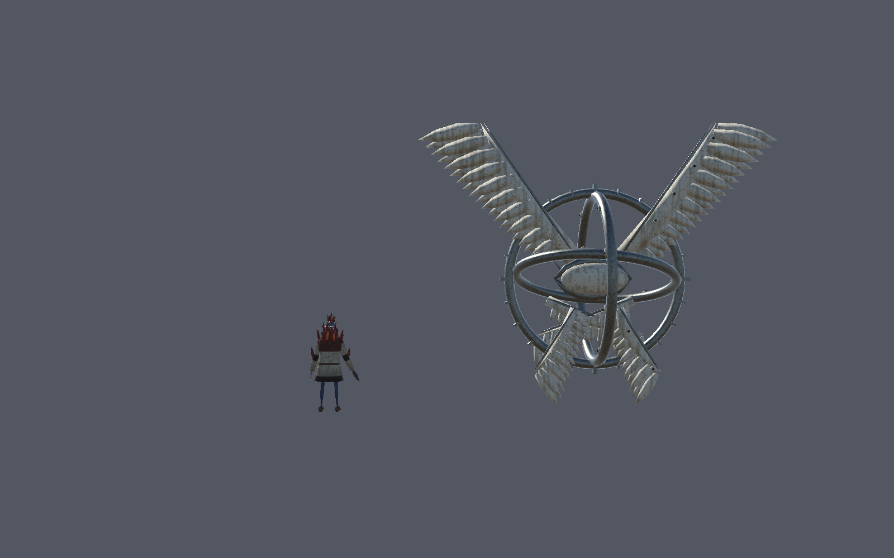

<title>The Wick and the Ophan, In Game</title>
<link rel="stylesheet" href="https://fonts.googleapis.com/css2?family=Spectral:wght@500;700&family=IBM+Plex+Sans:wght@400;600&family=IBM+Plex+Mono:wght@400&display=swap">
<style>
/* Layout: one reading column; what exists, then the build in three pieces, then five choices as option rows. */
:root {
  --bg: #eef0f3; --surface: #ffffff; --fg: #1d2129; --muted: #5a6170; --line: #d4d8df;
  --fire: #b8461f; --lapis: #4b4fa6; --pick: #e9eefc;
  --display: "Spectral", Georgia, serif; --body: "IBM Plex Sans", system-ui, sans-serif; --mono: "IBM Plex Mono", ui-monospace, monospace;
}
@media (prefers-color-scheme: dark) { :root:not([data-theme="light"]) {
  --bg: #15171c; --surface: #1d2027; --fg: #e6e8ec; --muted: #9aa1ae; --line: #2f343e;
  --fire: #e2774a; --lapis: #9a9ef0; --pick: #252b3d; color-scheme: dark } }
:root[data-theme="dark"] {
  --bg: #15171c; --surface: #1d2027; --fg: #e6e8ec; --muted: #9aa1ae; --line: #2f343e;
  --fire: #e2774a; --lapis: #9a9ef0; --pick: #252b3d; color-scheme: dark }
body { background: var(--bg); color: var(--fg); font: 15px/1.6 var(--body); }
main { max-width: 760px; margin: 0 auto; padding-inline: 16px; padding-block: 40px 64px; display: grid; gap: 40px; }
h1, h2 { font-family: var(--display); text-wrap: balance; line-height: 1.2; margin: 0; }
h1 { font-size: 2.2rem; }
h2 { font-size: 1.45rem; }
h3 { font-size: 1rem; margin: 0; }
p { margin: 0; max-width: 65ch; }
section { display: grid; gap: 14px; }
.eyebrow { font: 12px var(--mono); letter-spacing: .08em; text-transform: uppercase; color: var(--muted); }
.lede { color: var(--muted); }
figure { margin: 0; display: grid; gap: 6px; }
figure img { border-radius: 6px; border: 1px solid var(--line); }
figcaption { font-size: 13px; color: var(--muted); }
table { border-collapse: collapse; width: 100%; font-size: 14px; }
.scroll { overflow-x: auto; }
th, td { text-align: left; padding: 8px 10px; border-bottom: 1px solid var(--line); vertical-align: top; }
th { font: 12px var(--mono); text-transform: uppercase; letter-spacing: .06em; color: var(--muted); }
code { font: 13px var(--mono); }
.tag { font: 12px var(--mono); padding: 1px 7px; border-radius: 99px; border: 1px solid currentColor; white-space: nowrap; }
.keep { color: var(--muted); } .change { color: var(--lapis); } .drop { color: var(--fire); }
.pieces { display: grid; gap: 12px; }
.piece { background: var(--surface); border: 1px solid var(--line); border-radius: 8px; padding: 16px; display: grid; gap: 8px; }
.piece ul { margin: 0; padding-left: 20px; }
.who { font-family: var(--mono); font-size: 12px; }
.wick { color: var(--fire); } .ophan { color: var(--lapis); }
.choice { display: grid; gap: 8px; }
.opts { display: grid; gap: 6px; }
.opt { display: grid; grid-template-columns: 2.2rem 1fr; gap: 10px; padding: 10px 12px; border: 1px solid var(--line); border-radius: 6px; background: var(--surface); }
.opt.suggest { background: var(--pick); border-color: var(--lapis); }
.opt b.key { font-family: var(--mono); }
.opt small { display: block; color: var(--lapis); font-weight: 600; }
.approve { background: var(--surface); border: 1px solid var(--line); border-radius: 8px; padding: 16px; display: grid; gap: 8px; }
.approve code { display: block; padding: 8px 10px; background: var(--bg); border-radius: 4px; overflow-x: auto; }
</style>

<main>
  <header style="display:grid;gap:10px">
    <span class="eyebrow">Proposal for issue #386, Raids feel frightening · 2026-10-14</span>
    <h1>The Wick and the Ophan, in game</h1>
    <p class="lede">The models and animation clips for both creatures are built and, as of today, import cleanly in Unity. Neither appears in a raid yet. This page proposes how to put them there and asks five questions only you can answer.</p>
  </header>

  <section>
    <h2>Where it stands today</h2>
    <figure>
      
      <figcaption>Rendered in the Editor today, seen from behind. The Wick is 3.1 m tall and the Ophan is 9.5 m. Checks passed: the code compiles with no errors, the 7 fear import tests pass, and the full editor test suite shows 250 passed and 3 skipped.</figcaption>
    </figure>
    <p>One thing found today shapes the build: the Ophan's Animator has to sit on its <code>TheOphanOfHours_Rig</code> child object. If it sits on the top object instead, its animation clips miss every bone and the creature is drawn a hundred times too big.</p>
  </section>

  <section>
    <h2>What already exists, and what happens to it</h2>
    <div class="scroll"><table>
      <tr><th>Existing</th><th>Fate</th><th>Why</th></tr>
      <tr><td>The guard's state machine: Patrol, Investigate, Chase, Combat, HoldBelow, Stunned, Slept, OnFire, Dead (<code>GuardStateSet.cs</code>)</td><td><span class="tag change">reuse</span></td><td>The Wick becomes one more state, True Form, on the same Lantern Warden guard. No new enemy class.</td></tr>
      <tr><td>The Lantern Warden prefab, weight 12 in the High Medieval roster</td><td><span class="tag change">change</span></td><td>It carries the Wick model too, hidden until the turn.</td></tr>
      <tr><td>Guard death (<code>DeadState</code>, <code>GuardDeathPlayback</code>)</td><td><span class="tag change">change</span></td><td>The design says a guard in human form is never killed; a hit to the head stuns it instead. The Dead state stays only for the other guard types.</td></tr>
      <tr><td>The wizard's Animator built by code (<code>WizardPlayerSetup.cs</code>), the enemy prefab forge (<code>EnemyPrefabForge.cs</code>)</td><td><span class="tag keep">keep</span></td><td>Copied for both creatures, so nothing is set by hand in the Inspector.</td></tr>
      <tr><td><code>EventManager</code></td><td><span class="tag keep">keep</span></td><td>New events: a guard turned, the Ophan arrived, the Ophan caught someone. Camera, sound and music listen to them.</td></tr>
      <tr><td>The debt and the Collector (6 files read <code>TotalDebt</code>; <code>CollectorRules.cs</code>)</td><td><span class="tag drop">replace, piece 3</span></td><td>The Ophan's artifact quota replaces them. Before piece 3 starts, I will bring you a list of what to keep, change or drop, with line numbers.</td></tr>
    </table></div>
  </section>

  <section>
    <h2>The build, in three pieces</h2>
    <p>Each piece is its own pull request into the <code>staging-2026-10-11</code> branch. Each comes with tests, a co-op check (the Unity Editor as host plus a built client joining it) and screenshots I have looked at.</p>
    <div class="pieces">
      <div class="piece">
        <span class="who wick">Piece 1 · the Wick</span>
        <h3>The Lantern Warden turns</h3>
        <ul>
          <li>It turns when it sees a player or is hit. Hearing alone still only sends it to investigate.</li>
          <li>The turn takes 1.6 s: the warden's turn clip plays, the lantern drops and stays where it fell, the model swaps to the Wick, and the Wick rears up. Everyone in the raid sees it.</li>
          <li>As the Wick it moves faster, stalking at 1.4 m/s and hunting at 4.2 m/s. It sees only inside its own fire's light. A catch kills, and it never turns back.</li>
          <li>Tests cover every rule above. The co-op check has a warden see the client, turn on both machines, and kill on a catch.</li>
        </ul>
      </div>
      <div class="piece">
        <span class="who ophan">Piece 2 · the Ophan</span>
        <h3>The Ophan arrives and hunts</h3>
        <ul>
          <li>It arrives out of a point of light while the portal's clock runs low, drifts through walls, and fixes its eye on a player.</li>
          <li>Anyone it catches carrying a wanted artifact loses it and lives. Anyone it catches empty-handed dies.</li>
          <li>Until piece 3 exists, a test switch forces a hunted raid so it can be seen and checked.</li>
        </ul>
      </div>
      <div class="piece">
        <span class="who ophan">Piece 3 · the quota</span>
        <h3>The demand replaces the debt</h3>
        <ul>
          <li>Every 3 to 5 raids it demands specific artifacts, shown in the Lair's ledger. Placing them in the Lair pays the demand.</li>
          <li>While a demand is unpaid, every raid is a hunt.</li>
        </ul>
      </div>
    </div>
  </section>

  <section>
    <h2>Five choices</h2>
    <p>My suggestion is highlighted in each. The last three were left open on 2026-10-11.</p>

    <div class="choice">
      <h3>1 · Order</h3>
      <div class="opts">
        <div class="opt suggest"><b class="key">1A</b><span>Pieces 1, 2, 3 in turn. The Wick lands complete first; the Ophan follows, using the test switch until the quota exists.<small>Suggested: both creatures reach the game soonest, and each lands whole.</small></span></div>
        <div class="opt"><b class="key">1B</b><span>Both creatures first, each in a rough first version, with the rules after.</span></div>
        <div class="opt"><b class="key">1C</b><span>As the handoff says: the Ophan only after the quota is built (pieces 1, 3, 2).</span></div>
      </div>
    </div>

    <div class="choice">
      <h3>2 · More guards on the ground floors</h3>
      <div class="opts">
        <div class="opt suggest"><b class="key">2A</b><span>None for now. Keep today's counts and decide after playing with the Wick.<small>Suggested: the Wick changes how dangerous one guard is, so it is hard to judge the count before playing.</small></span></div>
        <div class="opt"><b class="key">2B</b><span>One more guard in each ground-floor zone, High Medieval only.</span></div>
        <div class="opt"><b class="key">2C</b><span>One more guard in each ground-floor zone, in every Age.</span></div>
      </div>
    </div>

    <div class="choice">
      <h3>3 · How the Ophan hunts</h3>
      <div class="opts">
        <div class="opt suggest"><b class="key">3A</b><span>It appears 90 s before the portal closes and drifts slowly (2.5 m/s, slower than a running player) through walls. It always knows where everyone is, so hiding does not work and reaching the portal does.<small>Suggested: it matches "no counter: carry what it asked for, or reach the portal first".</small></span></div>
        <div class="opt"><b class="key">3B</b><span>Same arrival and speed, but it hunts by sight like a guard, so hiding works.</span></div>
      </div>
    </div>

    <div class="choice">
      <h3>4 · Where artifacts are placed to pay</h3>
      <div class="opts">
        <div class="opt suggest"><b class="key">4A</b><span>A new altar beside the Lair's portal.<small>Suggested: a clear, single spot, close to where the haul comes home.</small></span></div>
        <div class="opt"><b class="key">4B</b><span>On the ledger desk, next to the book that shows the demand.</span></div>
        <div class="opt"><b class="key">4C</b><span>Thrown back into the portal.</span></div>
      </div>
    </div>

    <div class="choice">
      <h3>5 · What "spoils are taken" looks like on a hunted raid</h3>
      <div class="opts">
        <div class="opt suggest"><b class="key">5A</b><span>The Ophan takes them at the portal as you leave, so you watch it happen.<small>Suggested: the loss is seen in the raid, not discovered later.</small></span></div>
        <div class="opt"><b class="key">5B</b><span>The haul vanishes from the Lair when you return.</span></div>
      </div>
    </div>
  </section>

  <section class="approve">
    <h2>To approve</h2>
    <p>Reply with the phrase and your picks, for example:</p>
    <code>Build plan approved: fear entities 1A 2A 3A 4A 5A</code>
    <p>Or tell me what to change. Choices 3 to 5 only affect pieces 2 and 3, so piece 1 can start once you have answered choices 1 and 2.</p>
  </section>
</main>
